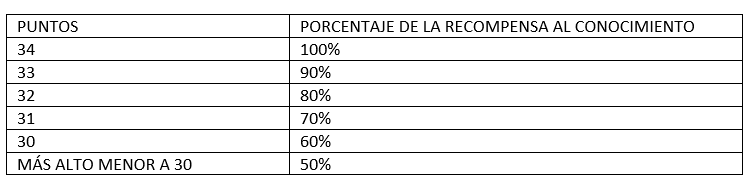

Polla en Ecuador, Colombia y Venezuela; prode en argentina; porra en España; Vaquita en Bolivia; Chancha en Perú; Penca en Uruguay; bolão en Brasil; JackPot en USA; scommese en Italia; son algunas formas de nombrar a la posibilidad que, además de entretenida, te permitirá medirte frente a otros, saber si realmente sabes de Futbol y además, la posibilidad de ganar mucho dinero en base a tu conocimiento. No es una lotería, no es un juego de azar; son tus conocimientos futbolísticos expresados en la forma de pronósticos y predicciones, que te colocarán como “especialista” y “conocedor” que eres del futbol mundial, frente al mundo y los demás participantes. Invita a tus familiares, amigos, compañeros, conocidos a competir por ser el mejor. El pronóstico se fundamenta en el conocimiento y la experiencia, no en la conjetura ni en el azar, llegó el momento de demostrar CUANTO SABES DE FUTBOL.
No es una lotería, no es un juego de azar; son tus conocimientos futbolísticos expresados en la forma de pronósticos y predicciones, que te colocarán como “especialista” y “conocedor” que eres del futbol mundial, frente al mundo y los demás participantes. Invita a tus familiares, amigos, compañeros, conocidos a competir por ser el mejor.
El pronóstico se fundamenta en el conocimiento y la experiencia, no en la conjetura ni en el azar, llegó el momento de demostrar CUANTO SABES DE FUTBOL.
Recuerda que ésta no es una página de apuestas, no es una lotería, no es un juego de azar por tanto, el valor de tu participación es fijo y el premio al que puedes hacerte acreedor, no depende de cuánto inviertes sino de cuánto sabes.
LEE CUIDADOSAMENTE LAS INSTRUCCIONES a fin no cometer errores.
Al registrarte recuerda ingresar CORRECTAMENTE tus datos; es de primordial importancia que ingreses tu número de cédula de identidad o número de pasaporte, únicos documentos válidos para proceder al cobro de premios.
Verifica tus datos de registro antes de proceder, recuerda que tus pronósticos, a más de demostrar quién eres en el mundo del fútbol, pueden hacerte ganar mucho dinero, no permitas que un error te prive de todo aquello.
Podrás participar si eres mayor de edad y lo confirmas al momento de registrarte y recuerda que, en caso de convertirte en ganador, deberás presentar un documento de identidad para poder cobrar tu premio.
¡REGÍSTRATE, haz tus pronósticos y prepárate para Ganar!
Para cualquier duda, contáctanos a nuestro correo electrónico, o a través de Facebook, Twitter o Instagram.
En base a tus conocimientos y experiencia haz tu pronóstico; recuerda que ninguna estadística te podrá decir más que lo que tú sabes, confía en tu conocimiento. Para refrescar tu memoria, podrás recurrir a la ventana “AYUDA MEMORIA”.
Tus posibilidades de triunfar dependerán de la cantidad de puntos que acumules, a mayores aciertos, mayores puntajes y a mayor puntaje más posibilidades de triunfar.
Verifica tus pronósticos antes de cubrir tu cuota de participación, recuerda que tus pronósticos, a más de demostrar quién eres en el mundo del fútbol, pueden hacerte ganar mucho dinero, no permitas que un error te prive de todo aquello.
Una vez que estés seguro de haber llenado adecuadamente CADA FASE, procede con la siguiente fase; recuerda que puedes cambiar de opinión y modificar cada fase mientras no hayas avanzado, pero recuerda que no puedes modificar fases anteriores. Ejemplos: Si completaste la fase de grupos y empiezas a pronosticar la fase de octavos, no puedes hacer cambios a la fase de grupos; si estás en cuartos, no puedes hacer cambios a la fase de octavos o grupos y así sucesivamente.
Para la fase de grupos deberás elegir, en cada grupo (A, B, C, D, E, F, G, H) conformado por cuatro países participantes cada uno, a los dos que consideres que pasarán a la fase de octavos.
Selecciona de la siguiente manera: Al que consideres que quedará primero del grupo (su marco cambiará a color verde) y luego al que consideres que quedará segundo (su marco se volverá café rojizo).
Cada vez que tu pronóstico sea igual al resultado, obtendrás un punto. En esta fase podrás lograr un máximo de 16 puntos.
Deberás elegir al ganador de cada partido, cada vez que tu pronóstico sea igual al resultado, obtendrás un punto. En esta fase podrás lograr un máximo de 8 puntos.
Deberás elegir al ganador de cada partido, cada vez que tu pronóstico sea igual al resultado, obtendrás un punto. En esta fase podrás lograr un máximo de 4 puntos.
Deberás elegir al ganador de cada partido, cada vez que tu pronóstico sea igual al resultado, obtendrás un punto. En esta fase podrás lograr un máximo de 2 puntos.
Cada vez que tu pronóstico, al País y la posición, sea igual al resultado, obtendrás un punto. Puntaje máximo: 4 puntos
Deberás acertar, en orden, al tercero y cuarto lugar.
Deberás acertar, en orden, al primer y segundo lugar.
Tus pronósticos podrás registrarlos hasta veinticuatro (24) HORAS antes del inicio del mundial; sin embargo, hazlo con suficiente anticipación ya que tenemos la certeza que, por aumento de tráfico en el sitio web, muchas personas no podrán participar a última hora.
Verifica tus pronósticos antes de cubrir tu cuota de participación, recuerda que tus pronósticos, a más de demostrar quién eres en el mundo del fútbol, puede hacerte recibir una recompensa por tu conocimiento, no permitas que un error te prive de todo aquello.
Tus posibilidades de obtener la recompensa a tu conocimiento dependerán de la cantidad de puntos que acumules, a mayores aciertos, mayores puntajes y a mayor puntaje más posibilidades de ganar.
La recompensa al conocimiento será para el puntaje más alto logrado y éste permitirá determinar el o los ganadores. Te recordamos que, de haber más de un acertante con el mismo puntaje, la recompensa al conocimiento se repartirá de manera equitativa.
La recompensa al conocimiento, como se mencionó previamente, se entregará a quien o quienes hayan alcanzado el mayor puntaje. De no haber ganador(es) con el mayor puntaje, se procederá al siguiente puntaje y así sucesivamente.
La recompensa al conocimiento repartible, dependerá de la cantidad de participantes ya que, el valor de la participación, descontando los gastos, será acumulable para la misma.